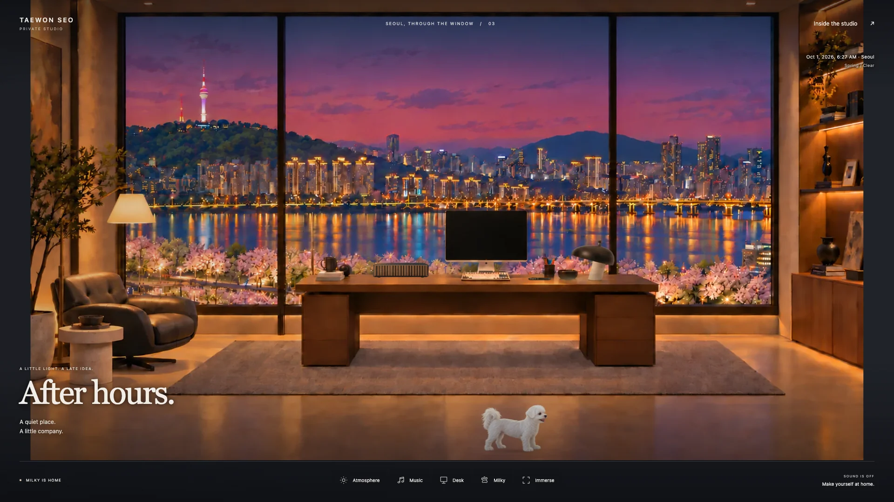
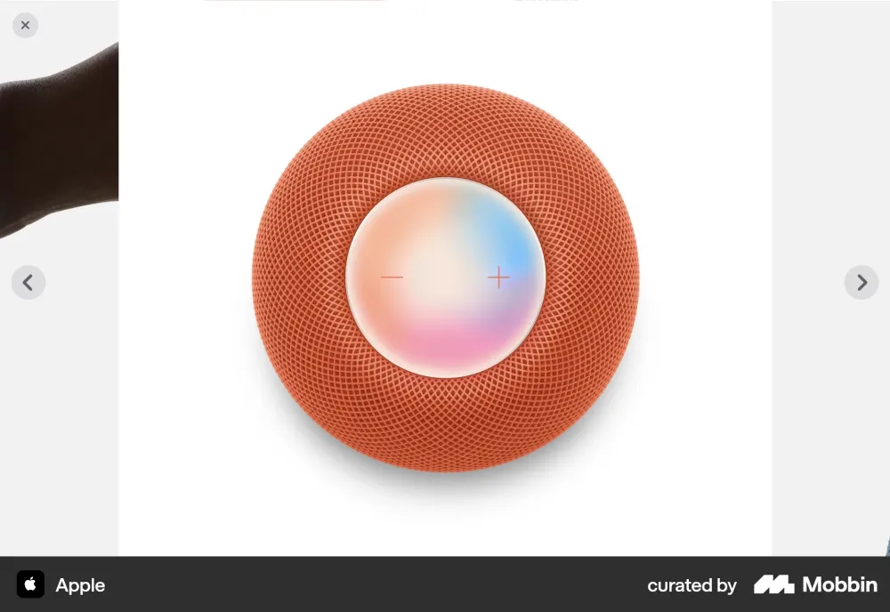
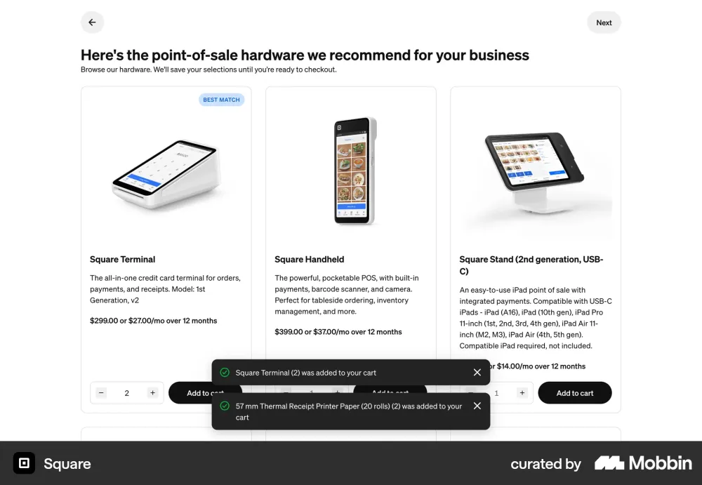
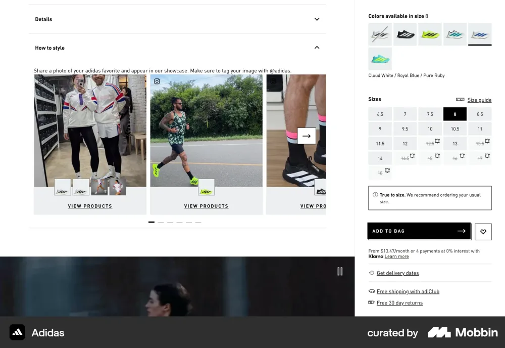
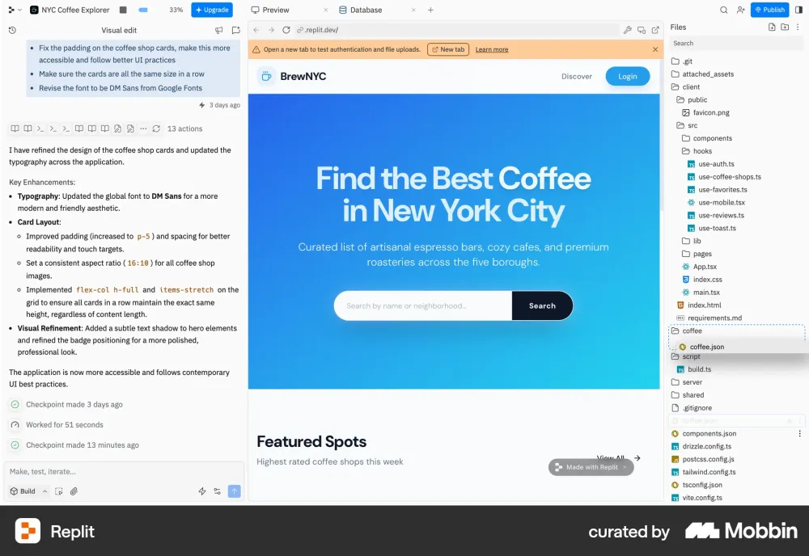

TAEWON SEO · SEOUL STUDIO · 2026.10.01
쓰는 도구와 듣는 도구.
몽블랑을 드러내는 낮은 실버 받침과 따뜻한 나무·패브릭 오디오. 기존 서울 전망과 가구를 보존하며 손으로 그린 질감으로 추가합니다.
적용된 방

선택
| 오브제 | 제품 | 배치 |
|---|
| 만년필 받침 | El Casco M-655 CT
황동·크롬 / 219 × 95 × 30 mm | HHKB 오른쪽 앞. 검정·금색의 캡을 닫은 만년필 한 자루. |
| 오디오 | B&O Beosound A9, Natural Aluminium
높이 90.8cm / 폭 70.1cm | 책상 오른쪽 바닥. 세 개의 오크 다리로 독립 설치. 클릭하면 배경음악 재생·일시정지. |
방에 어울리는 형태·소재를 기준으로 선택했습니다. 청음 비교를 통한 음질 순위나 특정 몽블랑 모델과의 수납 적합성 보증은 아닙니다.
방 안의 오디오, 더 선명한 모니터
오디오는 책상용 Balance 대신 Beosound A9를 선택했습니다. 큰 원형 패브릭과 오크 다리가 가구처럼 독립해 서는 제품입니다. 모니터는 파일 목록, 구문 강조, 현재 계절의 서울 미리보기, 상태 표시줄을 추가했습니다. Desk 패널에서 912×540 해상도의 상세 화면을 볼 수 있습니다.
참조: Replit 실제 화면, 21st 코드 화면. 두 자료 모두 MCP로 이미지 또는 소스·데모를 열람했습니다.
초기 비교와 선택 기록
확인 Official distributor catalog: solid brass, copper/nickel/chrome plated, hand polished, double horizontal pen rest, 219 × 95 × 30 mm.
적용 Low stepped chrome rest and capped black/gold fountain pen. On right front of keyboard. Illustrated silver remains subdued rather than photographic.
범위 User's exact Montblanc model is unknown; not a guaranteed fit claim.
확인 Official indexed page: black Italian calfskin, polished metal, 73.5 × 73.5 × 103.8 mm.
미채택 A cup conceals most of the fountain pen. Page open returned bot verification, not bypassed.
확인 Official listing includes round black leather pen holders.
미채택 Good matching-brand option, but the horizontal El Casco rest more clearly displays one pen.
확인 Official page: omnidirectional speaker; Natural Oak variant. Official September 2024 technical sheet: 38 cm high, 20 cm diameter; shelves, side tables, furniture placement.
적용 Superseded after clarification: this desktop candidate was replaced by the independent floorstanding A9.
미채택 Portable handle and basket form are more casual than the stationary sculptural Balance. No listening-quality superiority claimed.
열람 Actual image received through Mobbin MCP and viewed.
적용 Clear object close-up with little chrome.
열람 Actual image received through Mobbin MCP and viewed.
적용 Concise product name and material context.
미채택 Commerce and checkout actions.
열람 Actual image received through Mobbin MCP and viewed.
적용 Details secondary to imagery.
미채택 Shopping and sizing controls.
열람 get_component source and demo inspected: focusable trigger, limited width, optional image and secondary text.
적용 Existing focusable hotspot with concise object name; additional facts in Desk panel.
미채택 React/Radix dependency and extra animations.
열람 get_component source/demo inspected: explicit play/pause, playback state, Media Session handlers, cleanup.
적용 Use existing gesture-initiated audio and aria-pressed state.
미채택 Duplicate player, seek waveform and 60fps clock; existing sound engine already owns playback.
MCP로 확인한 화면




조사 기록
Mobbin MCP에서 Apple·Square·adidas 화면 3개를 실제로 열람했습니다. 21st MCP에서 Tooltip(211), MP3 Player(31602)의 컴포넌트·데모 코드를 확인했습니다. 브랜드·중립 컨트롤 색상은 이전에 열람한 Studio web-theme/vercel 자료를 재사용합니다. 이번 세션은 Studio catalog search/show 도구가 제공되지 않습니다.
개인 프로젝트의 Studio 연결과 동기화는 보류 상태입니다. 자동 검사는 기존 독립 DESIGN.md frontmatter 형식 오류를 반환했습니다. 자동 gate 통과로 표시하지 않습니다.
전체 조사 기록 · 기존 서울 공간 조사 · 방으로 돌아가기